소방설비기사(전기분야) (2018-09-15 기출문제)
1과목: 소방원론
1. 피난로의 안전구획 중 2차 안전구획에 속하는 것은?
- 복도
- 계단부속실(계단전실)
- 계단
- 피난층에서 외부와 직면한 현관
(정답률: 82%)

2. 어떤 기체가 0℃, 1기압에서 부피가 11.2L, 기체질량이 22g 이었다면 이 기체의 분자량은? (단, 이상기체로 가정한다.)
- 22
- 35
- 44
- 56
(정답률: 77%)
3. 제3종 분말소화약제에 대한 설명으로 틀린 것은?
- A, B, C급 화재에 모두 적응한다.
- 주성분은 탄산수소칼륨과 요소이다.
- 열분해시 발생되는 불연성 가스에 의한 질식효과가 있다.
- 분말운무에 의한 열방사를 차단하는 효과가 있다.
(정답률: 80%)
4. 연소의 4요소 중 자유활성기(free radical)의 생성을 저하시켜 연쇄반응을 중지시키는 소화방법은?
- 제거소화
- 냉각소화
- 질식소화
- 억제소화
(정답률: 87%)
5. 할론계 소화약제의 주된 소화효과 및 방법에 대한 설명으로 옳은 것은?
- 소화약제의 증발잠열에 의한 소화방법이다.
- 산소의 농도를 15% 이하로 낮게 하는 소화방법이다.
- 소화약제의 열분해에 의해 발생하는 이산화탄소에 의한 소화방법이다.
- 자유활성기(free radical)의 생성을 억제하는 소화방법이다.
(정답률: 80%)
6. 다음 중 분진폭발의 위험성이 가장 낮은 것은?
- 소석회
- 알루미늄분
- 석탄분말
- 밀가루
(정답률: 84%)
7. 갑종방화문과 을종방화문의 비차열 성능은 각각 최소 몇 분 이상이어야 하는가?
- 갑종 : 90분, 을종 : 40분
- 갑종 : 60분, 을종 : 30분
- 갑종 : 45분, 을종 : 20분
- 갑종 : 30분, 을종 : 10분
(정답률: 90%)
8. 경유화재가 발생했을 때 주수소화가 오히려 위험할 수 있는 이유는?
- 경유는 물과 반응하여 유독가스를 발생하므로
- 경유의 연소열로 인하여 산소가 방출되어 연소를 돕기 때문에
- 경유는 물보다 비중이 가벼워 화재면의 확대 우려가 있으므로
- 경유가 연소할 때 수소가스를 발생하여 연소를 돕기 때문에
(정답률: 89%)
9. 비열이 가장 큰 물질은?
- 구리
- 수은
- 물
- 철
(정답률: 86%)
10. TLV(Threshold Limit Value)가 가장 높은 가스는?
- 시안화수소
- 포스겐
- 일산화탄소
- 이산화탄소
(정답률: 48%)
11. 화재예방, 소방시설 설치ㆍ유지 및 안전관리에 관한 법령에 따른 개구부의 기준으로 틀린 것은?
- 해당 층의 바닥면으로부터 개구부 밑부분까지의 높이가 1.5m 이내일 것
- 크기는 지름 50㎝ 이상의 원이 내접할수 있는 크기일 것
- 도로 또는 차량이 진입할 수 있는 빈터를 향할 것
- 내부 또는 외부에서 쉽게 부수거나 열수 있을 것
(정답률: 69%)
12. 소화약제로 사용할 수 없는 것은?
- KHCO3
- NaHCO3
- CO2
- NH3
(정답률: 84%)
13. 염소산염류, 과염소산염류, 알칼리 금속의 과산화물, 질산염류, 과망간산염류의 특징과 화재 시 소화방법에 대한 설명 중 틀린 것은?
- 가열 등에 의해 분해하여 산소를 발생하고 화재 시 산소의 공급원 역할을 한다.
- 가연물, 유기물, 기타 산화하기 쉬운 물질과 혼합물은 가열, 충격, 마찰 등에 의해 폭발하는 수도 있다.
- 알칼리금속의 과산화물을 제외하고 다량의 물로 냉각소화한다.
- 그 자체가 가연성이며 폭발성을 지니고 있어 화약류 취급 시와 같이 주의를 요한다.
(정답률: 56%)
14. 내화구조에 해당하지 않는 것은?
- 철근콘크리트조로 두께가 10㎝ 이상인 벽
- 철근콘크리트조로 두께가 5㎝ 이상인 외벽 중 비내력벽
- 벽돌조로서 두께가 19㎝ 이상인 벽
- 철골철근콘크리트조로서 두께가 10㎝ 이상인 벽
(정답률: 73%)
15. 소방시설 중 피난설비에 해당하지 않는 것은?
- 무선통신보조설비
- 완강기
- 구조대
- 공기안전매트
(정답률: 83%)
16. 폭연에서 폭굉으로 전이되기 위한 조건에 대한 설명으로 틀린 것은?
- 정상연소속도가 작은 가스일수록 폭굉으로 전이가 용이하다.
- 배관 내에 장애물이 존재할 경우 폭굉으로 전이가 용이하다.
- 배관의 관경이 가늘수록 폭굉으로 전이가 용이하다.
- 배관내 압력이 높을수록 폭굉으로 전이가 용이하다.
(정답률: 78%)
17. 어떤 유기화합물을 원소 분석한 결과 중량백분율이 C : 39.9%, H : 6.7%, O : 53.4%인 경우 이 화합물의 분자식은? (단, 원자량은 C=12, O=16, H=1이다.)
- C3H8O2
- C2H4O2
- C2H4O
- C2H6O2
(정답률: 68%)
18. 유류 탱크의 화재 시 탱크 저부의 물이 뜨거운 열유층에 의하여 수증기로 변하면서 급작스런 부피 팽창을 일으켜 유류가 탱크 외부로 분출하는 현상은?
- 슬롭 오버(Slop Over)
- 블레비(BLEVE)
- 보일 오버(Boil Over)
- 파이어 볼(Fire Ball)
(정답률: 81%)
19. 건축물의 피난ㆍ방화구조 등의 기준에 관한 규칙에 따른 철망모르타르로서 그 바름 두께가 최소 몇 ㎝ 이상인 것을 방화구조로 규정하는가?
- 2
- 2.5
- 3
- 3.5
(정답률: 52%)
20. 제4류 위험물의 물리ㆍ화학적 특성에 대한 설명으로 틀린 것은?
- 증기비중은 공기보다 크다.
- 정전기에 의한 화재발생위험이 있다.
- 인화성 액체이다.
- 인화점이 높을수록 증기발생이 용이하다.
(정답률: 70%)
2과목: 소방전기회로
21. 정현파 전압의 평균값이 150V이면 최댓값은 약 몇 V인가?
- 235.6
- 212.1
- 106.1
- 95.5
(정답률: 56%)
22. 변위를 압력으로 변환하는 소자로 옳은 것은?
- 다이어프램
- 가변 저항기
- 벨로우즈
- 노즐 플래퍼
(정답률: 62%)
23. 그림과 같은 다이오드 게이트 회로에서 출력전압은? (단, 다이오드내의 전압강하는 무시한다.)
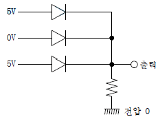
- 10V
- 5V
- 1V
- 0V
(정답률: 80%)
24. 전지의 내부 저항이나 전해액의 도전율 측정에 사용되는 것은?
- 접지저항계
- 캘빈 더블 브리지법
- 콜라우시 브리지법
- 메거
(정답률: 70%)
25. 전자유도현상에서 코일에 생기는 유도기전력의 방향을 정의한 법칙은?
- 플레밍의 오른손법칙
- 플레밍의 왼손법칙
- 렌쯔의 법칙
- 패러데이의 법칙
(정답률: 65%)
26. 반도체에 빛을 쬐이면 전자가 방출되는 현상은?
- 홀효과
- 광전효과
- 펠티어효과
- 압전기효과
(정답률: 81%)
27. 입력신호와 출력신호가 모두 직류(DC)로서 출력이 최대 5㎾까지로 견고성이 좋고 토크가 에너지원이 되는 전기식 증폭기기는?
- 계전기
- SCR
- 자기증폭기
- 앰플리다인
(정답률: 70%)
28. 시퀀스제어에 관한 설명 중 틀린 것은?
- 기계적 계전기접점이 사용된다.
- 논리회로가 조합 사용된다.
- 시간 지연요소가 사용된다.
- 전체시스템에 연결된 접점들이 일시에 동작할 수 있다.
(정답률: 78%)
29. 그림과 같은 회로에서 전압계 3개로 단상전력을 측정하고자 할 때의 유효전력은?
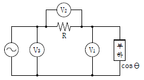
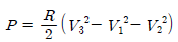
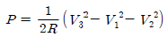
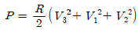
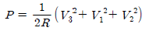
(정답률: 74%)
30. 어느 도선의 길이를 2배로 하고 전기저항을 5배로 하려면 도선의 단면적은 몇 배로 되는가?
- 10배
- 0.4배
- 2배
- 2.5배
(정답률: 61%)
31. 각 전류의 대칭분 I0, I1, I2가 모두 같게 되는 고장의 종류는?
- 1선 지락
- 2선 지락
- 2선 단락
- 3선 단락
(정답률: 65%)
32. 입력 r(t), 출력 c(t)인 제어시스템에서 전달함수 G(s)는? (단, 초기값은 0이다.)
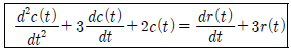
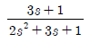
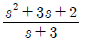
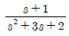
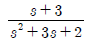
(정답률: 54%)
33. 다음 단상 유도전동기 중 기동토크가 가장 큰 것은?
- 셰이딩 코일형
- 콘덴서 기동형
- 분상 기동형
- 반발 기동형
(정답률: 75%)
34.
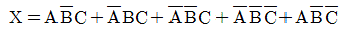
를 가장 간소화한 것은?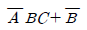
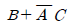
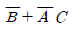
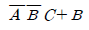
(정답률: 46%)
35. 한 상의 임피던스가 Z=16+j12Ω인 Y결선 부하에 대칭 3상 선간전압 380V를 가할 때 유효전력은 약 몇 ㎾인가?
- 5.8
- 7.2
- 17.3
- 21.6
(정답률: 37%)
36. 10㎌인 콘덴서를 60㎐ 전원에 사용할 때 용량 리액턴스는 약 몇 Ω인가?
- 250.5
- 265.3
- 350.5
- 465.3
(정답률: 65%)
37. 다음 소자 중에서 온도 보상용으로 쓰이는 것은?
- 서미스터
- 바리스터
- 제너다이오드
- 터널다이오드
(정답률: 86%)
38. 용량 10kVA의 단권변압기를 그림과 같이 접속하면 역률 80%의 부하에 몇 ㎾의 전력을 공급할 수 있는가?
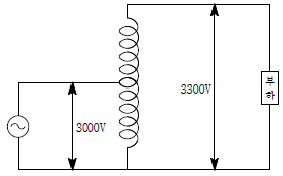
- 8
- 54
- 80
- 88
(정답률: 62%)
39. 1㎝의 간격을 둔 평행 왕복전선에 25A의 전류가 흐른다면 전선 사이에 작용하는 전자력은 몇 N/m이며, 이것은 어떤 힘인가?
- 2.5×10-2, 반발력
- 1.25×10-2, 반발력
- 2.5×10-2, 흡인력
- 1.25×10-2, 흡인력
(정답률: 64%)
40. 그림과 같은 계전기 접점회로의 논리식은?
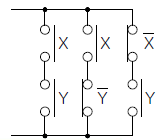
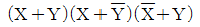
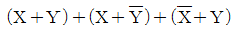
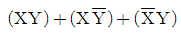
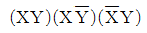
(정답률: 72%)
3과목: 소방관계법규
41. 소방시설공사업법령에 따른 성능위주설계를 할 수 있는 자의 설계범위 기준 중 틀린 것은?
- 연면적 30,000m2 이상인 특정소방대상물로서 공항시설
- 연면적 100,000m2 이하인 특정소방대상물 (단, 아파트등은 제외)
- 지하층을 포함한 층수가 30층 이상인 특정소방대상물 (단, 아파트등은 제외)
- 하나의 건축물에 영화상영관이 10개 이상인 특정소방대상물
(정답률: 52%)
42. 위험물안전관리법령에 따른 인화성액체위험물(이황화탄소를 제외)의 옥외탱크저장소의 탱크 주위에 설치하는 방유제의 설치기준 중 옳은 것은?
- 방유제의 높이는 0.5m 이상 2.0m 이하로 할 것
- 방유제내의 면적은 100,000m2 이하로 할것
- 방유제의 용량은 방유제안에 설치된 탱크가 2기 이상인 때에는 그 탱크 중 용량이 최대인 것의 용량의 120% 이상으로 할 것
- 높이가 1m를 넘는 방유제 및 간막이 둑의 안팎에는 방유제내에 출입하기 위한 계단 또는 경사로를 약 50m마다 설치할 것
(정답률: 55%)
43. 소방기본법에 따른 소방력의 기준에 따라 관할구역의 소방력을 확충하기 위하여 필요한 계획을 수립하여 시행하여야 하는 자는?
- 소방서장
- 소방본부장
- 시ㆍ도지사
- 행정안전부장관
(정답률: 71%)
44. 소방기본법령에 따른 용접 또는 용단 작업장에서 불꽃을 사용하는 용접ㆍ용단기구 사용에 있어서 작업자로부터 반경 몇 m 이내에 소화기를 갖추어야 하는가? (단, 산업안전보건법에 따른 안전조치의 적용을 받는 사업장의 경우는 제외한다.)
- 1
- 3
- 5
- 7
(정답률: 76%)
45. 소방기본법에 따른 벌칙의 기준이 다른 것은?
- 정당한 사유 없이 불장난, 모닥불, 흡연, 화기 취급, 풍등 등 소형 열기구 날리기, 그 밖에 화재예방상 위험하다고 인정되는 행위의 금지 또는 제한에 따른 명령에 따르지 아니하거나 이를 방해한 사람
- 소방 활동 종사 명령에 따른 사람을 구출하는 일 또는 불을 끄거나 번지지 아니하록 하는 일을 방해한 사람
- 정당한 사유 없이 소방용수시설 또는 비상소화장치를 사용하거나 소방용수시설 또는 비상소화장치의 효용을 해치거나 그 정당한 사용을 방해한 사람
- 출동한 소방대의 소방장비를 파손하거나 그 효용을 해하여 화재진압ㆍ인명구조 또는 구급활동을 방해하는 행위를 한 사람
(정답률: 69%)
46. 소방기본법령에 따른 소방대원에게 실시할 교육ㆍ훈련 횟수 및 기간의 기준 중 다음 ( )안에 알맞은 것은?
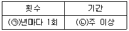
- ㉠ 2, ㉡ 2
- ㉠ 2, ㉡ 4
- ㉠ 1, ㉡ 2
- ㉠ 1, ㉡ 4
(정답률: 70%)
47. 화재예방, 소방시설 설치ㆍ유지 및 안전관리에 관한 법령에 따른 화재안전기준을 달리 적용하여야 하는 특수한 용도 또는 구조를 가진 특정소방대상물 중 핵폐기물처리시설에 설치하지 아니할 수 있는 소방시설은?
- 소화용수설비
- 옥외소화전설비
- 물분무등소화설비
- 연결송수관설비 및 연결살수설비
(정답률: 73%)
48. 화재예방, 소방시설 설치ㆍ유지 및 안전관리에 관한 법령에 따른 특정소방대상물 중 의료에 해당하지 않는 것은?
- 요양병원
- 마약진료소
- 한방병원
- 노인의료복지시설
(정답률: 69%)
49. 화재예방, 소방시설 설치ㆍ유지 및 안전관리에 관한 법령에 따른 특정소방대상물의 수용인원의 산정방법 기준 중 틀린 것은?
- 침대가 있는 숙박시설의 경우는 해당 특정소방대상물의 종사자 수에 침대수 (2인용 침대는2인으로 산정)를 합한수
- 침대가 없는 숙박시설의 경우는 해당 특정소방대상물의 종사자 수에 숙박시설 바닥면적의 합계를 3m2로 나누어 얻은 수를 합한 수
- 강의실 용도로 쓰이는 특정소방대상물의 경우는 해당 용도로 사용하는 바닥면적의 합계를 1.9m2로 나누어 얻은 수
- 문화 및 집회시설의 경우는 해당 용도로 사용하는 바닥면적의 합계를 2.6m2로 나누어 얻은 수
(정답률: 65%)
50. 화재예방, 소방시설 설치ㆍ유지 및 안전관리에 관한 법령에 따른 소방안전관리대상물의 관계인 및 소방안전관리자를 선임하여야 하는 공공기관의 장은 작동기능점검을 실시한 경우 며칠 이내에 소방시설등 작동기능 점검 실시 결과 보고서를 소방본부장 또는 소방서장에게 제출하여야 하는가?(2021년 03월 25일 개정된 규정 적용됨)
- 7일
- 15일
- 30일
- 60일
(정답률: 69%)
51. 화재예방, 소방시설 설치ㆍ유지 및 안전관리에 관한 법령에 따른 임시소방시설 중 간이소화장치를 설치하여야 하는 공사의 작업 현장의 규모의 기준 중 다음 ( ) 안에 알맞은 것은?
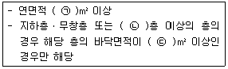
- ㉠ 1000, ㉡ 6, ㉢ 150
- ㉠ 1000, ㉡ 6, ㉢ 600
- ㉠ 3000, ㉡ 4, ㉢ 150
- ㉠ 3000, ㉡ 4, ㉢ 600
(정답률: 52%)
52. 화재예방, 소방시설 설치ㆍ유지 및 안전관리에 관한 법령에 따른 방염성능기준 이상의 실내장식물 등을 설치하여야 하는 특정 소방대상물의 기준 중 틀린 것은?
- 건축물의 옥내에 있는 시설로서 종교시설
- 층수가 11층 이상인 아파트
- 의료시설 중 종합병원
- 노유자시설
(정답률: 75%)
53. 소방시설공사업법령에 따른 소방시설공사 중 특정소방대상물에 설치된 소방시설등을 구성하는 것의 전부 또는 일부를 개설, 이전 또는 정비하는 공사의 착공신고 대상이 아닌 것은?
- 수신반
- 소화펌프
- 동력(감시)제어반
- 제연설비의 제연구역
(정답률: 65%)
54. 위험물안전관리법령에 따른 소화난이도등급I의 옥내탱크저장소에서 유황만을 저장ㆍ취급할 경우 설치하여야 하는 소화설비로 옳은 것은?
- 물분무소화설비
- 스프링클러설비
- 포소화설비
- 옥내소화전설비
(정답률: 65%)
55. 피난시설, 방화구획 또는 방화시설을 폐쇄ㆍ훼손ㆍ변경 등의 행위를 3차 이상 위반한 경우에 대한 과태료 부과기준으로 옳은 것은?
- 200만 원
- 300만 원
- 500만 원
- 1000만 원
(정답률: 65%)
56. 화재예방, 소방시설 설치ㆍ유지 및 안전관리에 관한 법령에 따른 공동 소방안전관리자를 선임하여야 하는 특정소방대상물 중 고층 건축물은 지하층을 제외한 층수가 몇층 이상인 건축물만 해당되는가?
- 6층
- 11층
- 20층
- 30층
(정답률: 72%)
57. 위험물안전관리법령에 따른 위험물제조소의 옥외에 있는 위험물취급탱크 용량이 100m3및 180m3인 2개의 취급탱크 주위에 하나의 방유제를 설치하는 경우 방유제의 최소 용량은 몇 m3이어야 하는가?
- 100
- 140
- 180
- 280
(정답률: 52%)
58. 화재예방, 소방시설 설치ㆍ유지 및 안전관리에 관한 법령에 따른 소방안전 특별관리 시설물의 안전관리에 대상 전통시장의 기준 중 다음 ( ) 안에 알맞은 것은?
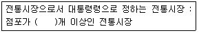
- 100
- 300
- 500
- 600
(정답률: 63%)
59. 위험물안전관리법령에 따른 정기점검의 대상인 제조소등의 기준 중 틀린 것은?
- 암반탱크저장소
- 지하탱크저장소
- 이동탱크저장소
- 지정수량의 150배 이상의 위험물을 저장하는 옥외탱크저장소
(정답률: 69%)
60. 소방기본법령에 따른 화재경계지구의 관리 기준 중 다음 ( ) 안에 알맞은 것은?
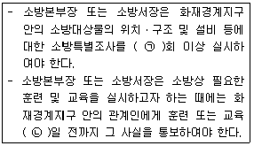
- ㉠ 월 1, ㉡ 7
- ㉠ 월 1, ㉡ 10
- ㉠ 연 1, ㉡ 7
- ㉠ 연 1, ㉡ 10
(정답률: 53%)
4과목: 소방전기시설의 구조 및 원리
61. 무선통신보조설비의 분배기ㆍ분파기 및 혼합기의 설치기준 중 틀린 것은?
- 먼지ㆍ습기 및 부식 등에 따라 기능에 이상을 가져오지 아니하도록 할 것
- 임피던스는 50Ω의 것으로 할 것
- 전원은 전기가 정상적으로 공급되는 축전지, 전기저장장치 또는 교류전압 옥내간선으로 하고, 전원까지의 배선은 전용으로 할 것
- 점검에 편리하고 화재 등의 재해로 인한 피해의 우려가 없는 장소에 설치할 것
(정답률: 68%)
62. 피난기구의 용어의 정의 중 다음 ( ) 안에 알맞은 것은?
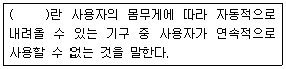
- 구조대
- 완강기
- 간이완강기
- 다수인피난장비
(정답률: 80%)
63. 청각장애인용 시각경보장치는 천장의 높이가 2m 이하인 경우에는 천장으로부터 몇 m 이내의 장소에 설치하여야 하는가?
- 0.1
- 0.15
- 1.0
- 1.5
(정답률: 82%)
64. 자동화재탐지설비의 연기복합형 감지기를 설치할 수 없는 부착높이는?
- 4m 이상 8m 미만
- 8m 이상 15m 미만
- 15m 이상 20m 미만
- 20m 이상
(정답률: 72%)
65. 비상조명등의 설치 제외 기준 중 다음 ( ) 안에 알맞은 것은?
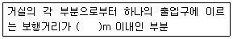
- 2
- 5
- 15
- 25
(정답률: 58%)
66. 각 소방 설비별 비상전원의 종류와 비상전원 최소용량의 연결이 틀린 것은? (단, 소방설비 – 비상전원의 종류 – 비상전원 최소용량 순서이다.)(문제 오류로 가답안 발표시 1번으로 발표되었지만. 확정답안 발표시 1, 4번이 정답 처리 되었습니다. 여기서는 1번을 누르면 정답 처리 됩니다.)
- 자동화재탐지설비 – 축전지설비 – 20분
- 비상조명등설비 – 축전지설비 또는 자가발전설비 – 20분
- 청정소화약제소화설비(할로겐화합물 및 불활성기체소화설비) - 축전지설비 또는 자가발전설비 – 20분
- 유도등 – 축전지 – 20분
(정답률: 75%)
67. 연기감지기의 설치기준 중 틀린 것은?(문제 오류로 가답안 발표시 2번으로 발표되었지만. 확정답안 발표시 2, 4번이 정답 처리 되었습니다. 여기서는 2번을 누르면 정답 처리 됩니다.)
- 부착높이 4m 이상 20m 미만에는 3종 감지기를 설치할 수 없다.
- 복도 및 통로에 있어서 1종 및 2종은 보행거리 30m마다 설치한다.
- 계단 및 경사로에 있어서 3종은 수직거리 10m마다 설치한다.
- 감지기는 벽이나 보로부터 0.6m 이상 떨어진 곳에 설치하여야 한다.
(정답률: 70%)
68. 비상콘센트용의 풀박스 등은 방청도장을 한것으로서 두께는 최소 몇 ㎜ 이상의 철판으로 하여야 하는가?
- 1.0
- 1.2
- 1.5
- 1.6
(정답률: 75%)
69. 자동화재속보설비를 설치하여야 하는 특정소방대상물의 기준 중 틀린 것은? (단, 사람이24시간 상시 근무하고 있는 경우는 제외한다.)
- 판매시설 중 전통시장
- 지하가 중 터널로서 길이가 1000m 이상인 것
- 수련시설(숙박시설이 있는 건축물만 해당)로서 바닥면적이 500m2 이상인 층이 있는 것
- 업무시설, 공장, 창고시설, 교정 및 군사시설 중 국방ㆍ군사시설, 발전시설(사람이 근무하지 않는 시간에는 무인경비시스템으로 관리하는 시설만 해당)로서 바닥면적이 1500m2 이상인 층이 있는 것
(정답률: 39%)
70. 비상방송설비의 배선과 전원에 관한 설치기준 중 옳은 것은?
- 부속회로의 전로와 대지 사이 및 배선상호간의 절연저항은 1경계구역마다 직류 110V의 절연저항측정기를 사용하여 측정한 절연저항이 1㏁ 이상이 되도록 한다.
- 전원은 전기가 정상적으로 공급되는 축전지 또는 교류전압의 옥내간선으로 하고, 전원까지의 배선은 전용이 아니어도 무방하다.
- 비상방송설비에는 그 설비에 대한 감시 상태를 30분간 지속한 후 유효하게 10분 이상 경보할 수 있는 축전지설비를 설치하여야 한다.
- 비상방송설비의 배선은 다른 전선과 별도의 관ㆍ덕트 몰드 또는 풀박스 등에 설치하되 60V 미만의 약전류회로에 사용하는 전선으로서 각각의 전압이 같을 때에는 그러하지 아니하다.
(정답률: 69%)
71. 7층인 의료시설에 적응성을 갖는 피난기구가 아닌 것은?
- 구조대
- 피난교
- 피난용트랩
- 미끄럼대
(정답률: 63%)
72. 비상방송설비의 음향장치 구조 및 성능기준중 다음 ( ) 안에 알맞은 것은?
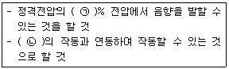
- ㉠ 65, ㉡ 단독경보형감지기
- ㉠ 65, ㉡ 자동화재탐지설비
- ㉠ 80, ㉡ 단독경보형감지기
- ㉠ 80, ㉡ 자동화재탐지설비
(정답률: 84%)
73. 비상방송설비 음향장치의 설치기준 중 다음 ( ) 안에 알맞은 것은?
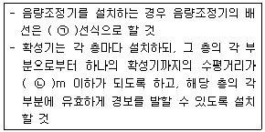
- ㉠ 2, ㉡ 15
- ㉠ 2, ㉡ 25
- ㉠ 3, ㉡ 15
- ㉠ 3, ㉡ 25
(정답률: 75%)
74. 누전경보기 전원의 설치기준 중 다음 ( )안에 알맞은 것은?
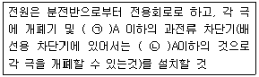
- ㉠ 15, ㉡ 30
- ㉠ 15, ㉡ 20
- ㉠ 10, ㉡ 30
- ㉠ 10, ㉡ 20
(정답률: 77%)
75. 유도등 예비전원의 종류로 옳은 것은?
- 알칼리계 2차축전지
- 리튬계 1차축전지
- 리튬 이온계 2차축전지
- 수은계 1차축전지
(정답률: 64%)
76. 축광방식의 피난유도선 설치기준 중 다음 ( )안에 알맞은 것은?
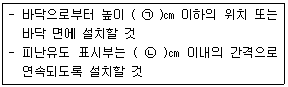
- ㉠ 50, ㉡ 50
- ㉠ 50, ㉡ 100
- ㉠ 100, ㉡ 50
- ㉠ 100, ㉡ 100
(정답률: 50%)
77. 무선통신보조설비 무선기기 접속단자의 설치 기준 중 다음 ( ) 안에 알맞은 것은?
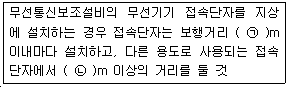
- ㉠ 400, ㉡ 5
- ㉠ 300, ㉡ 5
- ㉠ 400, ㉡ 3
- ㉠ 300, ㉡ 3
(정답률: 76%)
78. 비상콘센트설비의 전원부와 외함 사이의 절연내력 기준 중 다음 ( ) 안에 알맞은 것은?
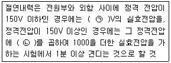
- ㉠ 500, ㉡ 2
- ㉠ 500, ㉡ 3
- ㉠ 1000, ㉡ 2
- ㉠ 1000, ㉡ 3
(정답률: 63%)
79. 자동화재탐지설비의 경계구역에 대한 설정기준 중 틀린 것은?
- 지하구의 경우 하나의 경계구역의 길이는 800m 이하로 할 것
- 하나의 경계구역이 2개 이상의 층에 미치지 아니하도록 할 것
- 하나의 경계구역의 면적은 600m2 이하로하고 한 변의 길이는 50m 이하로 할 것
- 하나의 경계구역이 2개 이상의 건축물에 미치지 아니하도록 할 것
(정답률: 76%)
80. 비상경보설비를 설치하여야 하는 특정소방대상물의 기준 중 옳은 것은? (단, 지하구, 모래ㆍ석재 등 불연재료 창고 및 위험물 저장ㆍ처리 시설 중 가스시설은 제외한다.)
- 지하층 또는 무창층의 바닥면적이 150m2이상인 것
- 공연장으로서 지하층 또는 무창층의 바닥 면적이 200m2 이상인 것
- 지하가 중 터널로서 길이가 400m 이상인 것
- 30명 이상의 근로자가 작업하는 옥내작업장
(정답률: 69%)